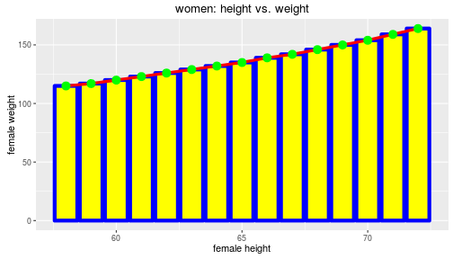

Presentation aims:
Noobz: Get you up and running with ggplot2
Mid: Get you confortable with ggplot2
Pro: Get you wanting to explore more
drbulu
Presentation aims:
Noobz: Get you up and running with ggplot2
Mid: Get you confortable with ggplot2
Pro: Get you wanting to explore more
Aim of this section: creating pretty plots!
Intro to ggplot2 with a simple dataset "women", which comes with the base (standard) R setup
# load ggplot2, then load data: 2 for 1 line special!
library(ggplot2); data(women)
## 1) will produce blank plot... no geom specified!
myBlankPlot = ggplot(women, aes(height, weight)) # recommended
myBlankPlot2 = ggplot(women) # contains data only
myBlankPlot3 = ggplot() # "empty" object
# 2) will produce basic line graph via geom_line()
myPlot = ggplot(women, aes(height, weight)) + geom_line()
Note: ggplot2 enables iterative building of complex graphics in layers via ➕ (plus) operator. See ?ggplot for more detail.
myPlot # or you can use: plot(myPlot) or print(myPlot)

These variations will produce the same output as myPlot (so one is not pondering the "right" way to setup plots)
This can be very useful when constructing complex plots or working with functions (control flow!)
# These variants will all work... try them out!
ggplot(women) + aes(height, weight) + geom_line()
ggplot(women) + geom_line(mapping = aes(height, weight))
ggplot() + geom_line(data = women, mapping = aes(height, weight))
ggplot() + geom_line(data = women) + aes(height, weight)
#odd.. but makes sense
ggplot() + aes(height, weight) + geom_line(data = women)
Takehome: There is quite a bit of flexibility in ggplot2 oject creation.
Aesthetics: define visual or other attributes of ggplot objects
aes() or to the geom to be modified.Geoms: aka "geometrics objects"
Note:
# Examples: one plot... 3 geoms... many aesthetics!
myCustomPlot = ggplot(women, aes(height, weight)) +
geom_bar(stat="identity", color="blue", fill="yellow", size=2) +
geom_line(color="red", size = 1.5) + geom_point(color = "green", size = 4)
myCustomPlot # note draw order: layers stacked from bottom to top!!
 Note: stat="identity" means no stat stansformations (plot values as is)
Note: stat="identity" means no stat stansformations (plot values as is)
myCustomPlot = myCustomPlot + labs(x = "female height", y = "female weight",
title = "women: height vs. weight")
myCustomPlot # or you can use: plot(myCustomPlot) or print(myCustomPlot)

Reference: http://docs.ggplot2.org/current/labs.html
Note: another example of ggplot2 iterative plot building.
this makes no sense?
Welcome to "iris"! A slightly more complex dataset (also available in base R)
data(iris) # seriously... this is almost there but not quite..
ggplot(iris, aes(Sepal.Length, Sepal.Width)) + geom_point(aes(color=Species)) +
geom_line(aes(color=Species))

Facets anyone?
# facet_grid() call's formula: separate all data (.) according to "Species" variable
ggplot(iris, aes(Sepal.Length, Sepal.Width)) + geom_point(aes(color=Species)) +
geom_line(aes(color=Species)) + facet_grid(. ~ Species)

Wrap gives nice control over facet rows and columns!
# facet_wrap() call's formula: as above, but no dot (go figure)
ggplot(iris, aes(Sepal.Length, Sepal.Width)) + geom_point(aes(color=Species)) +
geom_line() + facet_wrap(~ Species, ncol=2)

simple linear model application via geom_smooth()!
myLmPlot = ggplot(iris, aes(Sepal.Length, Sepal.Width)) + geom_point(aes(color=Species)) +
facet_wrap(~ Species, ncol=2) + geom_smooth(method="lm", se = FALSE)
myLmPlot

Reference: http://docs.ggplot2.org/current/geom_abline.html
Note: see the docs for many ways to apply lines!
Themes... are basically the CSS of ggplot2 (absolute POWER!)
simplePlotTheme = theme( # plot title formatting
plot.title = element_text(size = 12, colour = "red"),
# plot background: neatened up via element_blank()
panel.background = element_blank(),
# legend modifications
legend.position = "top",
legend.title = element_text(size = rel(1.5)),
legend.text = element_text(size = rel(1.2)))
# Note: sizes can be relative or absolute as contrasted above!
myLmPlot = myLmPlot + simplePlotTheme #Apply theme
Reference: http://docs.ggplot2.org/current/theme.html
More on themes: https://www.r-bloggers.com/ggplot2-themes-examples/
For finer plot control and greater flexibility than facet.
# create base plot: note the placement of color aesthetic!
myIrisPlot = ggplot(iris, aes(Sepal.Length, Sepal.Width, color=Species)) + geom_point()
# create list of plots (plotList)
irisPlotList = list()
irisPlotList[["points"]] = myIrisPlot
irisPlotList[["line"]] = myIrisPlot + geom_line()
irisPlotList[["lm"]] = myIrisPlot + geom_smooth(method = "lm", se=FALSE)
# content check
names(irisPlotList)
## [1] "points" "line" "lm"
The lazy man's way to pretty plot list organisation
library(cowplot) # note: masks some ggplot2 functions when loaded
plot_grid(plotlist = irisPlotList, labels = c("A", "B", "C"), nrow=1)
 For more see:
For more see:
https://cran.r-project.org/web/packages/cowplot/vignettes/introduction.html
This is a reasonably simple function to aid list handling.
Note: you can make hideously complicated funcions... it can be worth it, but "caveat emptor"!
gridExtra is a package worth exploring for the adventurous:
https://cran.r-project.org/web/packages/gridExtra/index.html
applyThemesToPlots = function(plotList, themeList){
errorMsg = "The list of plots and the list of themes MUST be the same length!"
if (length(plotList) != length(themeList)) stop(errorMsg)
for(i in 1:length(plotList)) plotList[[i]] = plotList[[i]] + themeList[[i]]
return(plotList)
}
# incidentally: you can use lapply() to quickly apply ONE theme to MANY plots
# you can even wrap this in a basic function "shell" for convenience.
sameTheme = lapply(irisPlotList, FUN = function(x, t) return(x + t),
t = simplePlotTheme)
The results!
miscThemeList = list(theme_minimal(), theme_dark(), simplePlotTheme)
themedIrisPlotList = applyThemesToPlots(plotList = irisPlotList, themeList = miscThemeList)
plot_grid(plotlist = themedIrisPlotList, labels = c("A", "B", "C"), nrow=1)
Why use require() over library()?
isLoadedByLibrary = library(ggplot2); isLoadedByLibrary
## [1] "gridExtra" "cowplot" "ggplot2" "stats" "graphics"
## [6] "grDevices" "utils" "datasets" "methods" "base"
isLoadedByRequire = require(ggplot2); isLoadedByRequire
## [1] TRUE
Takehome: require can be used in control flow (e.g. dependency checking) in functions and other situations
Remember: ggplot plots are objects (lists) that contain the data required to plot them... therefore include only the data that you need!
names(myIrisPlot)
## [1] "data" "layers" "scales" "mapping" "theme"
## [6] "coordinates" "facet" "plot_env" "labels"
head(myIrisPlot$data, 2)
## Sepal.Length Sepal.Width Petal.Length Petal.Width Species
## 1 5.1 3.5 1.4 0.2 setosa
## 2 4.9 3.0 1.4 0.2 setosa
Note: This also means that you can extract information from plots for "downstream applications".